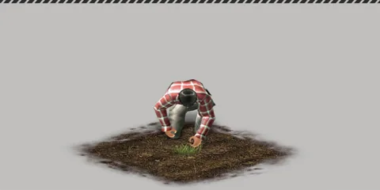
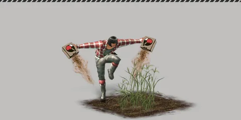

Home › Gathering & Crafting
 Farming Live
Farming Live
Build a field or flower bed, plant seeds, water and fertilize them, then harvest the crop plus one seed back
Some sections on this page are not ready yet
Grow your own plants on fields you build. Crops grow in real time, even while you are offline. Once a crop is ripe you pull it up to get the produce (food, flowers, fiber and more) plus one seed back.

What you can do
- Build a Small Field / Large Field or a Flower Bed and plant one seed per plot
- Give Water and Give Fertilizer to shorten the growing time (optional — an unwatered crop still grows, just slower)
- Place a Sprinkler to water many plots at once without using water from your bag
- Harvesting gives Farming skill exp and levels up that seed's Farming Encyclopedia entry, which unlocks specializations
How to do it
- Build a plot (see Building). Plots you can plant in:
| Plot | Size (tiles) |
|---|---|
| Small Field · Small Gray Field | 1×1 |
| Large Field · Large Gray Field | 2×2 |
| Small Flower Bed (Wood / Stone / Horn) | 1×1 |
| Wide Flower Bed (Wood / Stone / Horn) | 2×2 |
- Walk up to the plot, choose Plant Seed and pick a seed from your bag
- While it grows, use Give Water (with Water or Hot Spring Water — Sea Water does not work) and Give Fertilizer (any item with the Compost property, e.g. Grass Fertilizer, Primitive Fertilizer, Quality Fertilizer, Liquid Fertilizer, Animal Droppings, Mud, Moss)
- When it shows Available to Harvest, choose Remove Crop to collect the produce

Key numbers
Growing time
Growing times come from the game's crop data, but this server limits them to between 1 minute and 4 hours — crops that took longer than 4 hours in the original (e.g. Coffee Plant, Banana Tree and other fruit trees) grow in 4 hours.
| Crop | Growing time |
|---|---|
| Corn | 5.5 minutes (seed level 1) to 35 minutes (level 60) |
| Onion | 15.5 minutes (level 1) to 45 minutes (level 60) |
| Potato · Pumpkin | 30.5 minutes (level 1) to 60 minutes (level 60) |
| Apple | 10 minutes |
| Peepkin | 1 hour |
| Flax · Wheat · Bean · Jasmine | 1.5 hours |
| Carnation · White Rose | 2.5 hours |
| Rice Plant · Barley · Sunflower · Wild Rose and several other flowers | 3 hours |
| Everything else | 4 hours |
Water and fertilizer
| Action | Effect |
|---|---|
| Water once | Remaining time −10% to −15% (more the closer the plot is to fully watered) · 1 water item = 1 unit |
| Fertilize once | Remaining time −12% to −25% (more the better fertilized the plot is) |
| Water needed | 2–40 units depending on the crop (Apple needs none) |
The water/fertilizer options disappear by themselves once the plot has everything the crop needs.
Sprinklers
Touch a sprinkler and choose Give Water — every planted plot inside its spray area gets 1 unit of water at the same time, with no water taken from your bag.
| Sprinkler | Tiles covered |
|---|---|
| 4 | |
| Square Sprinkler | 8 |
| Multipurpose Square Sprinkler | 10 |
| Wide Square Sprinkler | 24 |
| Multipurpose Wide Square Sprinkler | 28 |
| High-Pressure Sprinkler | 32 |
| Multipurpose High-Pressure Sprinkler | 40 |
Harvest
| You get | Amount |
|---|---|
| Produce | 1–4 pieces depending on the crop (same level as the seed) × specialization bonus |
| Seed back | 1 seed (original seed level − 5, minimum 1) |
| Farming Encyclopedia | +20 exp per harvest of a ripe crop |
Examples: Corn Seed → Corn (Food) · Seed Potato → Coliban Potato (Food). Produce marked "(Food)" can be eaten or cooked but not planted again.
Farming Encyclopedia
Each seed type has its own encyclopedia level (max 20). A level is reached when total exp hits 50 × level × (level+1). At each milestone you pick one specialization.
| Level | Total exp (≈ harvests) | Options |
|---|---|---|
| 5 | 1,500 (75) | Less water needed or less fertilizer needed (amount depends on the crop) |
| 10 | 5,500 (275) | See "Not finished yet" |
| 15 | 12,000 (600) | Growing time −10% or produce +10% |
| 20 | 21,000 (1,050) | See "Not finished yet" |
Specializations only affect crops planted after you choose them.
Tips
Some produce is still a generic item Live
For 21 crops the original game's specific produce is unknown, so they currently give a generic item instead, e.g. ornamental flowers → Flower · Maple Tree/Ginkgo Tree → Leaf · Banana Tree, Mango, Orange → Tropical Fruit · Fig Tree → Normal Fruit. This may change once more data is found.
Not finished yet
Level 10 and 20 specializations Not ready
The level 10 options (less time/energy when harvesting) and level 20 options (chance of random/rare properties) can be selected in the encyclopedia but have no effect on plots yet.
Soil preference · withering · growth-boosting fertilizer Not ready
- The original data has each crop's "preferred land" and "survival chance", but they are not used yet — crops currently never wither and grow the same anywhere.
- The Compost line in the fertilize window always shows "None", because there is no way yet to get fertilizer with a growth-boosting property.